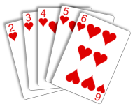

Truco mineiro é uma das variações do truco, um dos jogos de carta mais emocionantes e populares da América do Sul, Espanha e Itália. Nesta variação do jogo de truco, utiliza-se o baralho francês, tem manilhas fixas e podem jogar 2 ou 4 pessoas.

Regras
São necessários 2 ou 4 jogadores
Queda é o nome dado à partida de truco. Uma queda é disputada em melhor de 3 jogos, que são divididos em mãos Quem fizer 12 pontos primeiro ganha o jogo
Cada mão começa valendo 2 pontos
As mãos são divididas em melhor de três rodadas
As manilhas são fixas, na seguinte ordem: 4 de paus (zap) > 7 de copas > Ás de espadas (espadilha) > 7 de ouros
A ordem das cartas é: 3 > 2 > A > k > J > Q > 7 > 6 > 5 > 4
Mão de dez é quando uma das duplas atinge 10 pontos. Os jogadores olham as cartas um do outro antes de jogar.
Pode ser disputada a mão de ferro em caso de empate em 10 a 10. As duas duplas disputam a mão as cegas.
Pedir truco aumenta a aposta da mão para quatro pontos
Os aumentos seguintes ao truco são: seis, dez, doze e queda